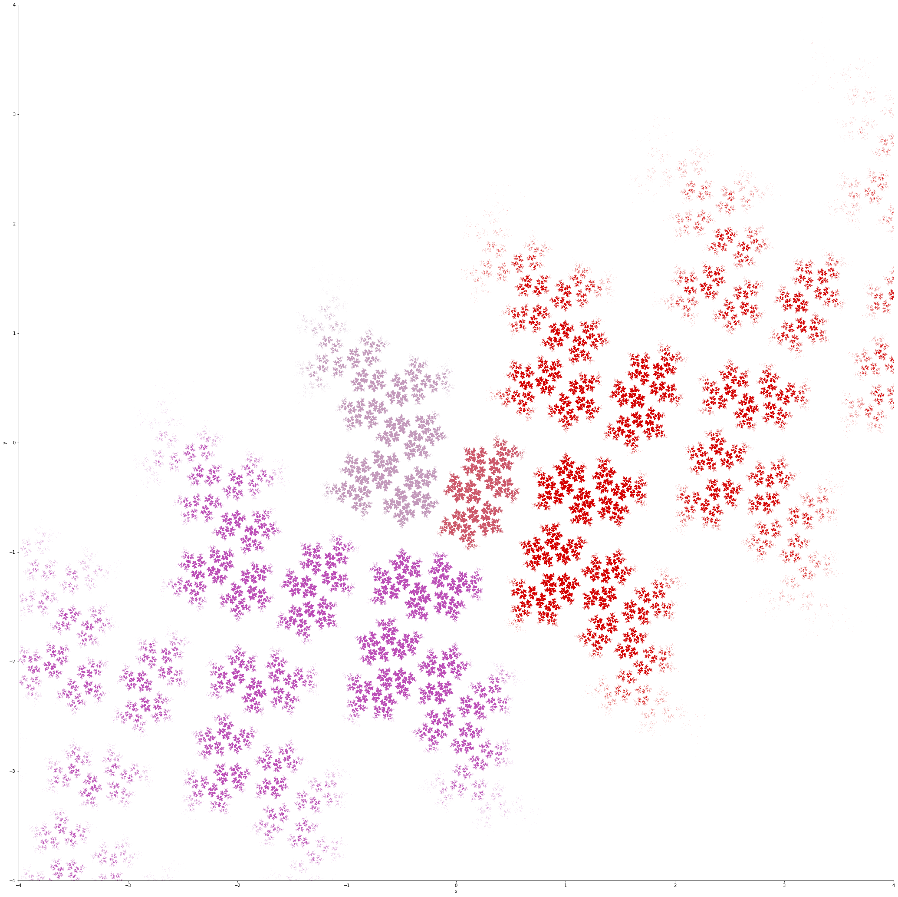
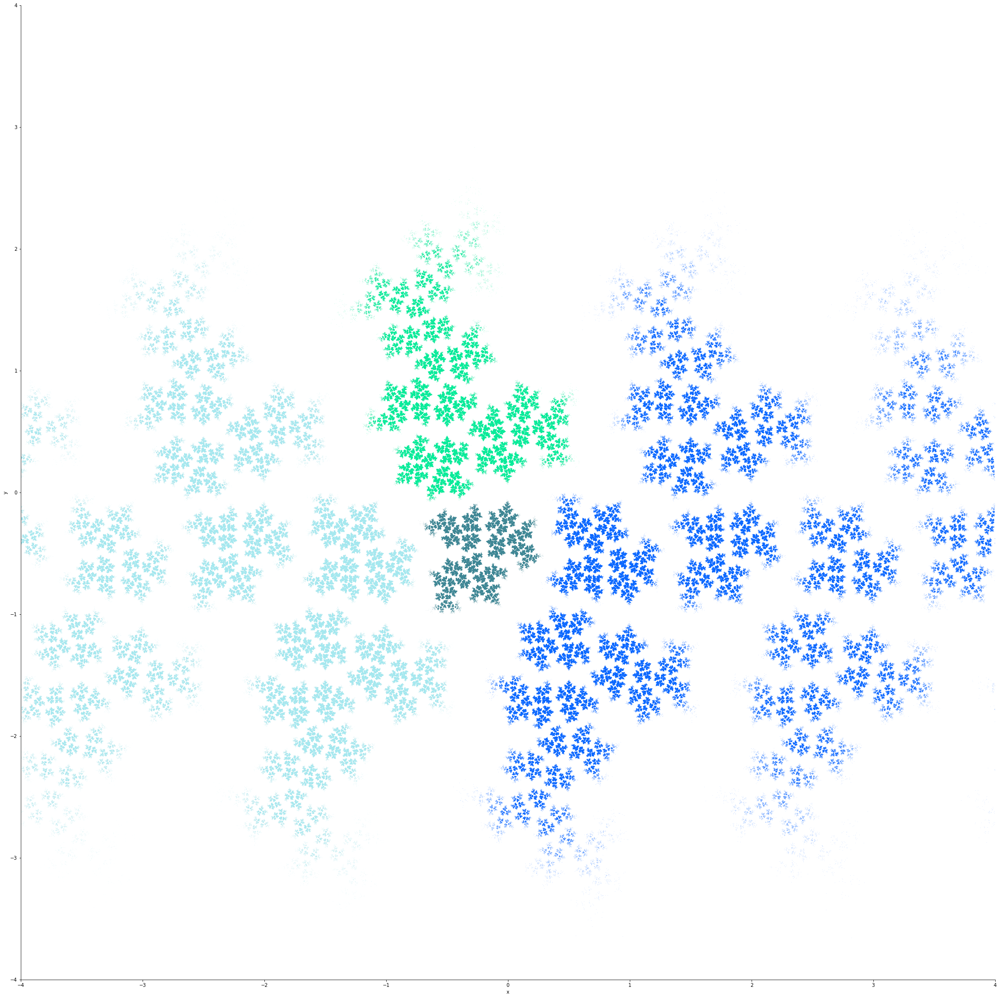
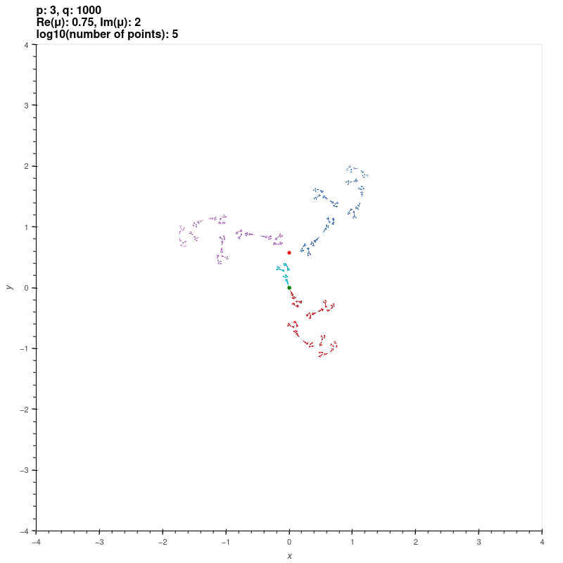
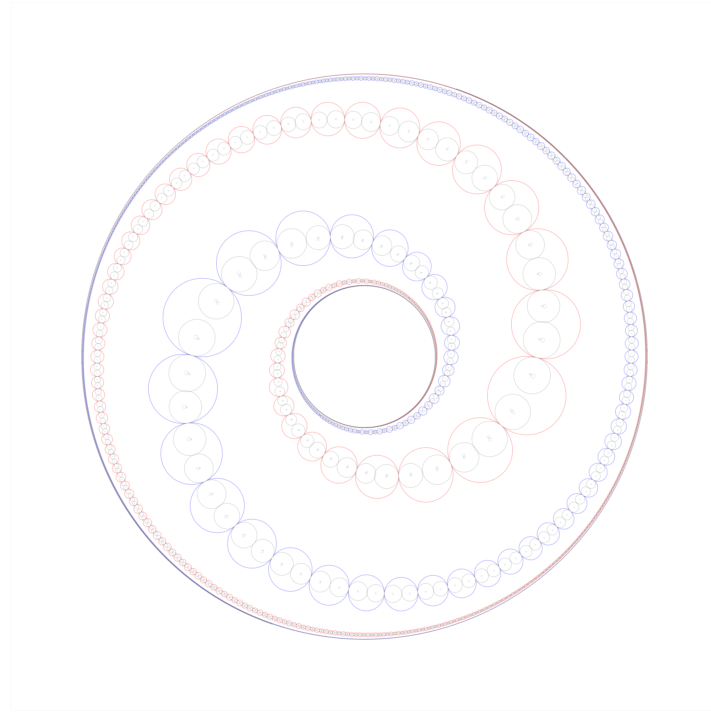

{kind=link}
The points in black are the traces of elements.

{kind=link}
{kind=link}
{kind=link}
{kind=link}
{kind=link}
Let \(a = \sqrt{1+i} \), \( b = \sqrt{1-i} \), \( c = \frac{1}{2} - i\frac{\sqrt{3}}{2} \).
{kind=link}
{kind=link}
{kind=link}


(This is the group of Fig. 151 in [FK], and is different to the Apollonian Gasket group above.)
{kind=link}


{kind=link}


{kind=link}
{kind=link}
{kind=link}
{kind=link}
{kind=link}
{kind=link}
{kind=link}
{kind=link}
{kind=link}
{kind=link}
{kind=link}
{kind=link}
{kind=link}

{kind=link}
{kind=link}

{kind=link}

This is a zoo of Kleinian group limit sets (and approximations to limit sets of some non-discrete groups too), generated by my bella Python package. Most of the code to generate the pictures below is in the examples/ directory.
| Group | Remarks and reference | Limit set (click for full size) |
|---|---|---|
| The Apollonian gasket | Generated by \( \begin{bmatrix} 1 & 1 \\ 0 & 1 \end{bmatrix}, \begin{bmatrix} 1 & 0 \\ 2i & 1 \end{bmatrix} \) | |
| The figure eight knot | Generated by \( \begin{bmatrix} 1 & 1 \\ 0 & 1 \end{bmatrix}, \begin{bmatrix} 1 & 0 \\ e^{-2\pi i/3} & 1 \end{bmatrix} \) The points in black are the traces of elements. |
|
| A Fuchsian bead group | Generated by reflections across tangent beads (red) arranged in a circle [M, § VIII.F.2] | |
| A quasi-Fuchsian bead group | Generated by reflections across tangent beads (red) arranged in a rectangle [M, § VIII.F] | |
| A "twisted" bead group | Generated by reflections across tangent beads (red) arranged in a figure eight [M, § VIII.F.5] | |
| A quasi-Fuchsian bead group | Generated by reflections across tangent beads (red) arranged in a more complicated curve [M, § VIII.F] | |
| Abikoff's web group | A web group is a finitely generated Kleinian group for which each component stabiliser is quasi-Fuchsian. The Apollonian gasket group is also a web group, but it is quasi-Fuchsian. The group we give here is web but not quasi-Fuchsian. The generators are four parabolics, two pairing the small tangent circles and two pairing the large tangent circles. [KAG, example 23] | |
| Jørgensen-Marden groups | These groups are two groups which are topologically equivalent but not quasiconformally
equivalent. They both uniformise the product of a punctured torus with an open interval.
They are geometrically infinite discrete groups, but the limit sets fill the Riemann sphere [KAG, Example 43]. Let \(a = \sqrt{1+i} \), \( b = \sqrt{1-i} \), \( c = \frac{1}{2} - i\frac{\sqrt{3}}{2} \). | |
| \[ \begin{bmatrix} c & c \\ c & 1 \end{bmatrix}, \begin{bmatrix} 2 - 2c & -1 \\ -1 & c \end{bmatrix} \] |  | |
| \[ \frac{1}{a}\begin{bmatrix} 1 & -i \\ 1 & 1 \end{bmatrix}, \frac{1}{b}\begin{bmatrix} 2+i & i \\ -1 & -i \end{bmatrix} \] |  | |
| Extensions of the modular group | The modular group \( \mathrm{PSL}(2,\mathbb{Z}) \) is generated by the transformations \[ S = \begin{bmatrix} 0 & -1 \\ 1 & 0 \end{bmatrix}, T = \begin{bmatrix} 1 & 1 \\ 0 & 1 \end{bmatrix}. \] Define also the transformation \( Q(z) = (1+i)(z-1)/2(z+i) \), which sends \( \mathbb{H}^2 \) to the disc of radius \( 1/2 \) centred at \( i/2 \), sending the fixed point of \( T \) to three o'clock; and the transformation \( Q'(z) = iz/(z+i) \) which is the same but with an additional twist by \( \pi/2 \) to send the fixed point of \( T \) to twelve o'clock. | |
| \( \langle S^Q, T^Q, z\mapsto z+1 \rangle \). | ||
| \( \langle S^Q, T^Q, z \mapsto -1/(z-i) \rangle \). | |
|
| \( \langle S^Q, T^Q, z \mapsto -1/z \rangle \). | |
|
|
\( \langle S^{Q'}, T^{Q'}, z \mapsto z+1 \rangle \). (This is the group of Fig. 151 in [FK], and is different to the Apollonian Gasket group above.) |
||
| \( \langle S^{Q'}, T^{Q'}, z \mapsto -1/(z-i) \rangle \). | |
|
| Bianchi groups | The Bianchi groups are the groups \( \mathrm{PSL}(2, O_d \) where \( O_d \) is the ring of integers in the imaginary quadratic number field \( \mathbb{Q}[\sqrt{-d}] \) [MR, section 1.4.1]. Generators for the groups were given by Swan [S]. In the following set \[ S = \begin{bmatrix} 0 & -1 \\ 1 & 0 \end{bmatrix}, T = \begin{bmatrix} 1 & 1 \\ 0 & 1 \end{bmatrix}. \] | |
| \( \mathrm{PSL}(2,O_1) = \langle S, T, z \mapsto -z, z \mapsto -z-i \rangle \). | |
|
| \( \mathrm{PSL}(2,O_2) = \langle S, T, z \mapsto z + \sigma \rangle \) where \( \sigma = i\sqrt{2} \). | |
|
| \( \mathrm{PSL}(2,O_3) = \langle S, T, z \mapsto z + \omega, z \mapsto \omega z \rangle \) where \( \omega = (-1+i\sqrt{3})/2 \). | |
|
| \( \mathrm{PSL}(2,O_5) = \langle S, T, z \mapsto z + \phi, z \mapsto \frac{-\phi z + 2}{2z+\phi}, z \mapsto \frac{(-\phi - 4)z - 2\phi}{2\phi z + \phi - 4} \rangle \) where \( \omega = i\sqrt{5} \). | ||
| \( \langle S^{Q'}, T^{Q'}, z \mapsto -1/(z-i) \rangle \). | |
|
| A B-group with an accidental parabolic | A B-group is an analytically finite group such that its domain of discontinuity \(\Omega\) has a simply connected invariant component. There are three kinds of B-groups: quasi-Fuchsian groups (where \(\Omega\) has exactly two components); degenerate groups (where \(\Omega\) has exactly one component); and groups with accidental parabolics. Suppose \(\Delta\) is an invariant component of a B-group \(G\). A group \(\tilde{G}\) with invariant component \(\tilde\Delta\) is conformally similar to \(G\) if there is an isomorphism \( f_* : G \to \tilde{G} \) and a conformal map \( f : \Delta \to \tilde{\Delta} \) such that \( f_*(g)(z) = g(f(z)) \) for all \(g \in G, z \in \Delta\); a parabolic \( j \in G \) is accidental if there exists such a group \( \tilde{G} \) and a similarity such that \( f_* j \) is not parabolic. Using [M, Exercise IX.I.4] we construct a B-group with an accidental parabolic out of the modular group. The first two generators are the usual modular group generators, and the third is a conjugate of the involution by \( u(z) = z + 4i \): \[ S = \begin{bmatrix} 0 & -1 \\ 1 & 0 \end{bmatrix}, \quad j = \begin{bmatrix} 1 & 1 \\ 0 & 1 \end{bmatrix}, \quad u S u^{-1} = \begin{bmatrix} 4i & 15 \\ 1 & -4i \end{bmatrix} \] The resulting quotient has a component with curves represented by parabolics that do not bound a cusp. | |
| Geometrically infinite group of the second kind | A geometrically infinite discrete group on two generators; the example is due to Jørgensen [KAG, example 53]. For some parameter \(m\), set \( \lambda = \exp(\pi i/2m) \), \( \phi = \frac{1}{2} (1 + \sqrt{17 - 8\cos(\pi/m)}) \), \( \rho = \frac{1}{2}(\sqrt{\phi + 2} + \sqrt{\phi - 2}) \), \( x = \frac{\sqrt{3-\phi} + \sqrt{-\phi-1}}{2\sqrt{\phi-2}} \), and \( y = \frac{-\sqrt{3-\phi} + \sqrt{-\phi-1}}{2\sqrt{\phi-2}} \); then the group is generated by \[ \begin{bmatrix} \rho & 0 \\ 0 & \rho^{-1} \end{bmatrix}, \begin{bmatrix} -\lambda x & -(1+x^2) \\ 1 & \lambda^{-1} x \end{bmatrix}. \] | |
| \( m = 2 \) | |
|
| \( m = 3 \) | ||
| \( m = 8 \) | ||
| Riley groups | These groups are discrete groups generated by the matrices \[ X=\begin{bmatrix} \exp(\pi i/p) & 1 \\ 0 & \exp(-\pi i/p) \end{bmatrix}, Y=\begin{bmatrix} \exp(\pi i/q) & 0 \\ \mu & \exp(-\pi i/q) \end{bmatrix} \] where \( p,q \) are integers or infinity with \( \min\{p,q\} \geq 2 \) and \( \max\{p,q\} \geq 3 \). For \( |\mu| \gg 0 \), the group is the free product of the cyclic groups generated by \( X \) and \( Y \) [KS2] [EMS]. The red and green dots are the fixed points of the generators. | |
| \( p = 2, q = 3, \mu = 1.97+0.8i \) | ||
| \( p = 3, q = 3, \mu = 0.44+1.06i \) | ||
| \( p = 4, q = 6, \mu = 2i \) | ||
| \( p = 3, q = 8, \mu = 0.34+1.5i \) | ||
| \( p = 3, q = 1000 \approx \infty, \mu = 2i \) | ||
| \( p = 3, q = 1000 \approx \infty, \mu = 0.75+2i \) |  | |
| \( p = 1000 \approx \infty, q = 1000 \approx \infty, \mu = 0.35+1.21i \) | ||
| Maskit groups | These groups are discrete groups generated by the matrices \[ \begin{bmatrix} -\mu i & -i \\ -i & 0 \end{bmatrix}, \begin{bmatrix} 1 & 2 \\ 0 & 1 \end{bmatrix} \] which uniformises a once-punctured torus for \( \Re \mu \gg 0 \) [KS1] [MSW, ch. 9]. The red and green dots are the fixed points of the generators. | |
| \( \mu = 0.59+1.67i \) | ||
| \( \mu = 0.96+1.75i \) | ||
| \( \mu = 1.91+1.89i \) | ||
| Schottky groups on two generators | Consider the groups generated by the matrices \[ X = \begin{bmatrix} \lambda & 1 \\ 0 & \lambda^{-1} \end{bmatrix}, Y = \begin{bmatrix} \mu & 0 \\ z & \mu^{-1} \end{bmatrix}. \] For \( |z| \gg 0 \) these are Schottky groups. We parameterise these groups below by \( \tr X \), \( \tr Y \), and \( z \), and conjugate the limit sets by \[ T = \begin{bmatrix} 1 & i \\ i/2 & 1/2 \end{bmatrix} \] so that the groups pair the isometric circles of their generators (i.e. the generators don't fix infinity). The red and green dots are the fixed points of the generators. | |
| \( \tr X = 2.1, \tr Y = 2.01i, z = -1.55 + 2i \) | ||
| \( \tr X = 2.1, \tr Y = 2.01i, z = 0.77 + 2.19i \) | |
|
| \( \tr X = \sqrt{2} + \sqrt{2}i, \tr Y = 2.01i, z = -0.39-0.44i \) | ||
| \( \tr X = \sqrt{2} + \sqrt{2}i, \tr Y = 2.01i, z = 0.39+0.9i \) | ||
| \( \tr X = 0.5i, \tr Y = -0.5i, z = 1.87+4.96i \) | |
|
| Grandma's Recipe groups | These groups are discrete groups generated by the matrices \[ \begin{bmatrix} \frac{t_a}{2} & \frac{ t_a t_{ab} - 2 t_b +4i}{ z_0 (2 t_{ab}+4)} \\ \frac{t_a t_{ab}-2 t_b - 4i)z_0}{2t_{ab}-4} & \frac{t_a}{2} \end{bmatrix} \begin{bmatrix} \frac{t_b - 2i}{2} & \frac{t_b}{2} \\ \frac{t_b}{2} & \frac{t_b + 2i}{2} \end{bmatrix} \] where \( t_a, t_b, t_{ab} \in \mathbb{C} \) solve the polynomial \( t_{ab}^2 + t_a^2 + t_b^2 = t_a t_b t_{ab} \) and where \[ z_0 = \frac{(t_{ab}-2)t_b}{t_b t_{ab} - 2t_a + 2i t_{ab}}. \] These groups uniformise a once-punctured tori [MSW, ch. 8]. | |
| \( t_a = 1.89 + 0.05i, t_b = 2 \) | ||
| \( t_a = t_b = 1.01 + 0.05i \) | |
|
| \( t_a = 1.87 + 0.1i, t_b = 1.87 - 0.1i \) | ||
| \( (1;2) \)-compression body groups | These groups are discrete groups generated by two commuting parabolic transformations (producing a rank 2 cusp) and a loxodromic transformation. They uniformise a handlebody with a torus drilled out, which is of interest in the study of tunnel 1 manifolds [LP]. We take the generators to be \[ X = \begin{bmatrix} 1 & \alpha \\ 0 & 1 \end{bmatrix}, Y = \begin{bmatrix} 1 & \beta \\ 0 & 1 \end{bmatrix}, M = \begin{bmatrix} \lambda & 1 \\ \lambda^2 - 1 & \lambda \end{bmatrix}. \] | |
| \( \alpha = 1.24 + 0.05i \), \( \beta = -0.25 + 1.68i \), \(\lambda = 0.12 + 1.10i \) | ||
| Illustration of chaos | These are approximations to the limit set of the group \[ \left\langle i\begin{bmatrix} -1 & 1 \\ 0 & 1 \end{bmatrix},\; i\begin{bmatrix} 1 & 0 \\ 1 & -1 \end{bmatrix} \right\rangle, \] one coming from (left) words of length at most 5 and one (right) from words of length at most 6. So you would expect the points in the left picture to be a strict subset of points in the right picture. The fact that this isn't the case is evidence of how chaotic this limit set is, and this limit set seems to be particularly chaotic. (Part of the problem is that some of the entries in the matrices are slightly in error in the third decimal place. If the group is truly the one listed then the limit set has exactly two points, namely the fixed points of the product of the generators.) | |
| Atom groups | We approximate the Accola atom group [M, § VIII.F.7], generated by reflections in two strings of tangent beads which spiral from the outside of an annulus to the inside. In the limit (as the number of circles tends to infty), the quotient \( \Omega(G)/G \) has four components. Two of these components are discs: they are the projections of the discs \( 1/2 \leq |z| \leq 2 \) and \( 2 \leq |z| \) in \( \Omega(G) \) which both have trivial stabiliser in \( G \), and which are called atoms. | |
| With beads showing |  | |
| Without beads |
{kind=link}
{kind=link}
{kind=link}
{kind=link}